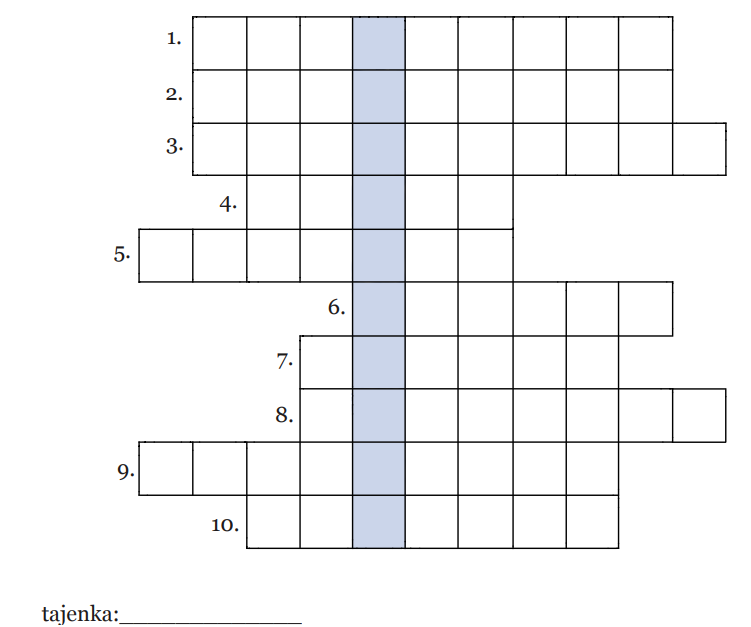
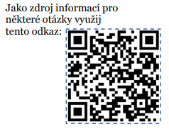

Vtipy


1. Kurz, kterým projdou všíchni nově nastoupení žácí na začátku školního roku.
2. Druh našeho gymnázia.
3. Kurz spjatý s biologií.
4. Jméno architekta budovy je Alois…
5. Přibližný počet žáků.
6. Název poslední třídy osmiletého studia.
7. Kolik je na škole celkem tříd?
8. Ve školním roce 2011/12 byla v rámci projektu zmodernizována laboratoř předmětu...
9. Příjmení současného ředitele školy.
10. Náš významný absolvent, který se stal architektem (žil v letech 1888-1976) se jmenoval
Antonín…